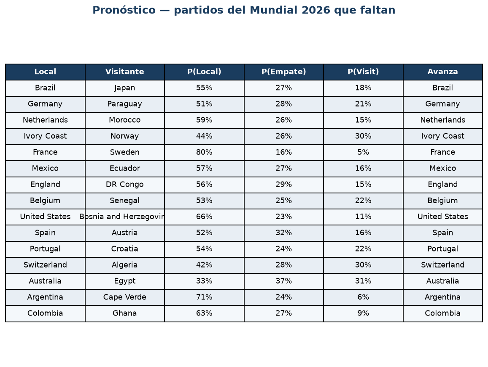
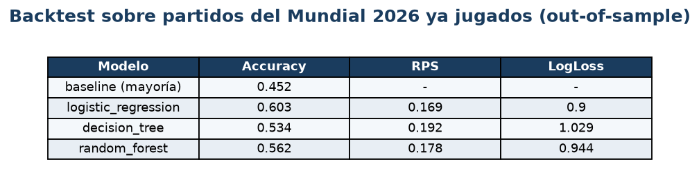
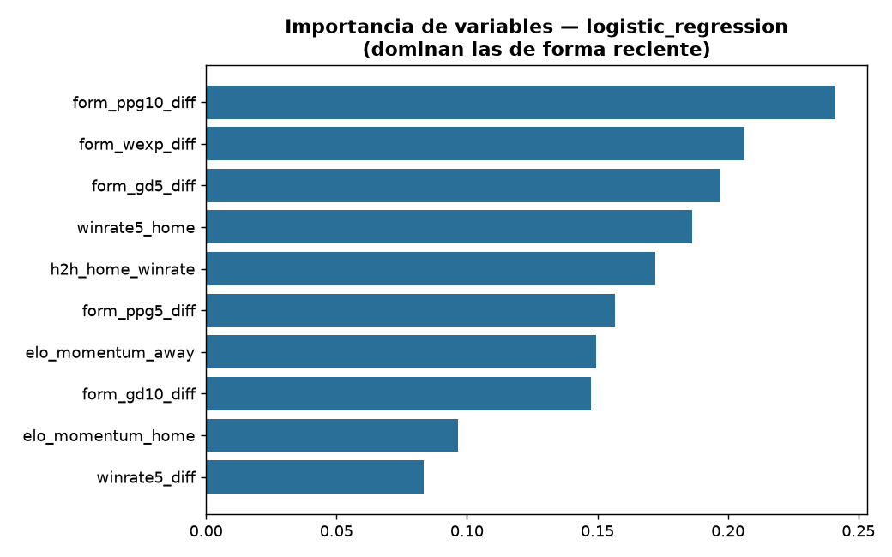
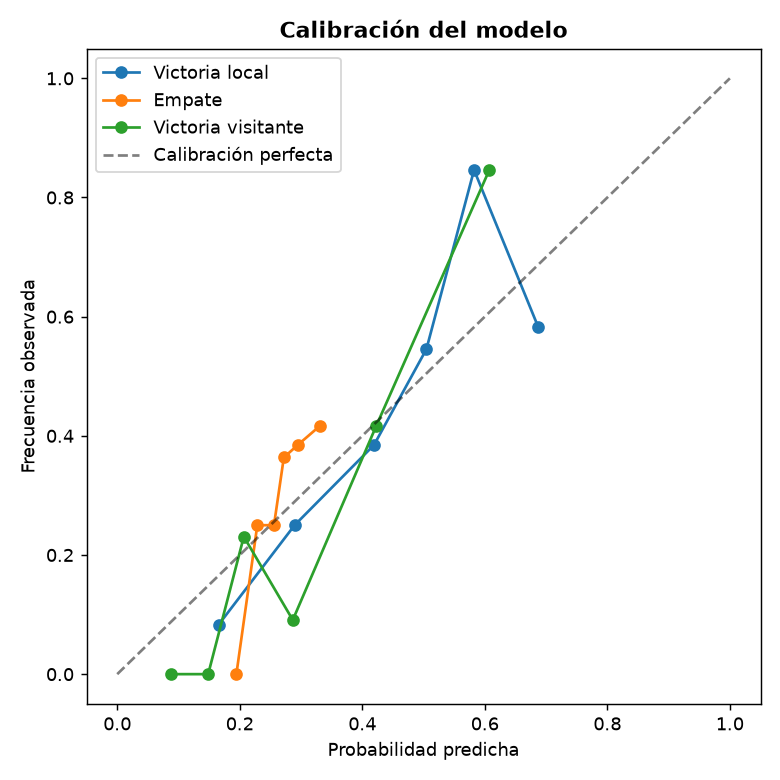

🎯 Objetivo
Predecir el resultado de cada partido (Victoria Local / Empate / Victoria Visitante) a partir del desempeño reciente de las selecciones, y aplicar el modelo para pronosticar los encuentros restantes del Mundial 2026, indicando además la probabilidad de que cada equipo avance (los penales reparten el empate).
🏆 Pronóstico — partidos que faltan

✅ Backtest (out-of-sample)
El modelo se evalúa sobre los partidos del Mundial ya jugados, que no vio al entrenar: ~60 % de acierto 1X2, frente al ~45 % de la línea base.

🔍 Qué mira el modelo
Domina la forma reciente (últimos partidos, forma ponderada, momentum), no la historia antigua.


🧠 Modelos utilizados
Deterministas / estadísticos
- Elo (momentum reciente)
- Dixon-Coles (Poisson + decaimiento temporal)
ML supervisado (1X2)
- Regresión Logística
- Árbol de Decisión
- Random Forest
- XGBoost
Métricas
- Accuracy, F1-macro
- Log-loss, RPS, Brier
- Calibración
Datos
- martj42 (partidos reales, CC0)
- API-Football (rating de plantel)
🚀 Cómo correrlo
Subí notebooks/Mundial_ML_Colab.ipynb a
Google Colab y hacé Runtime → Run all.